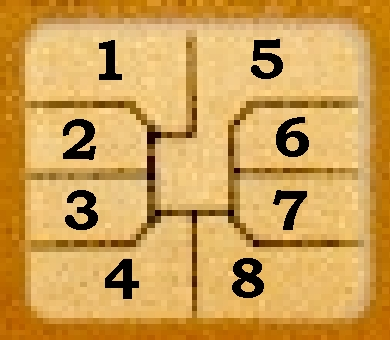
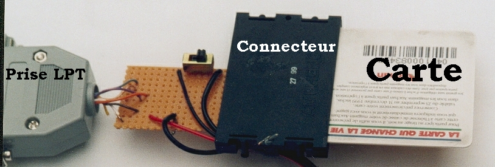
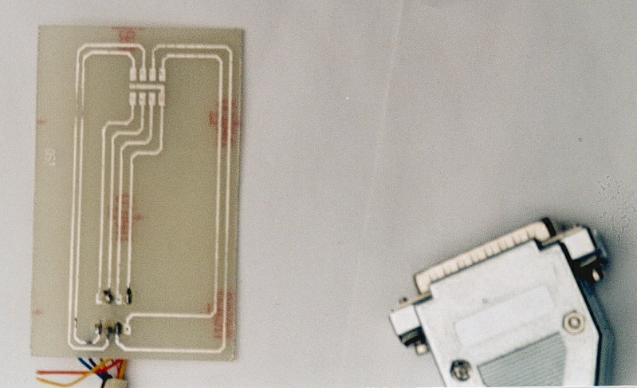

| Emulateur logiciel de télécartes |
Plan de l'article :I) Introduction au phreak de cartes à puces
II) Lire le contenu d'une carte à puce
III) L'émulation: principe, matériel & réalisation
IV) Conclusion
Hello tlm. Aujourd'hui
on va faire un tour du côté des cartes à puces. Avertissement
: cet article ne vous permettra pas de faire des fausses cartes FT. Le but de
cet article est, de téléphoner gratos dans une cabine FT, nuance
! On va en effet "émuler" une carte France Télécom. Tout
d'abord explication de ce qu'est une carte FT : C'est une carte à puce,
qui contient une mémoire de 256 bits. En fait, les cartes France Télécom
1ère génération, (T1G) se composaient d'une en-tête
comportant la date, le nombre d'unité, un numéro de série,
etc... de 96 bits. Le reste de la carte était composé de.... 0.
Puis au fur et à mesure que la carte est débitée, les 0
passe à 1. Voila. Il est seulement possible de faire passer des 0 en
1, avec une certaine tension mais bon, ce n'est pas le sujet, j'ai bricolé
avec l'écriture et j'ai rempli 3 cartes avec des 1 :)
Les Télécartes de secondes génération (T2G), quand
à elles, sont cryptées, too bad hu ... :( MAIS ! on peut
toujours utiliser des cartes de première génération en
France (pour le moment bien sur) alors si vous avez pas une vieille carte FT,
c con pour vous ! Non, je déconnes, on va s'en sortir vous en faîtes
pas ;p En fait, vous pourriez me demander "Mais, ducon, on s'en tappe qu'elle
soit cryptée, puisqu'on fait que copier son contenu ! Il est con lui
!". Et moi, je m'empresse de répondre, "Soyez poli tout de même,
je suis pas sur du tout, mais il se pourrait que le lecteur vérifie si
l'unité a bien été débitée, et ça
je sais pas, donc on doit pouvoir rajouter des unités simplement, et
m'emmerdez pas, c'est plus simple, vous allez pas faire l'articel à ma
place non ?". Avant, il suffisait de cacher une broche de la carte pour pas
que les unités soient débitées, mais FT a changé
toutes ses cartes et ses lecteurs, de manière à ce que la carte
réponde "Oui lecteur, il a taxé une unité !". Sinon, ça
s'arrête !
Le principe de ce phreak est le suivant : On commence par lire une télécarte
de première génération, dont on enregistre l'image dans
un fichier. Ce fichier on le met dans un portable. Connaissant parfaitement
le protocole Carte/Cabine (but de l'article je précise), on pourra alors,
en raccordant le portable à la cabine, faire croire à la cabine
qu'elle dialogue avec une carte FT alors qu'elle parle à un ordi ! En
fait, il suffira de faire passer à 1 les bits de notre fausse carte quand
la cabine enverra un signal qui correspondra à "nique lui une unité
en plus". Voila pour le principe de base. Evidemment, un portable c'est pas
la top mais bon, ça doit être possible d'émuler ça
avec une calculette programmable de lycée non ? J'en sais rien personnellement
sur les E/S des calculettes mais bon, si quelqu'un a des infos, hésitez
pas hein ! Donc dans un premier temps on va enregistrer le contenu d'une carte
à puce, et dans un deuxième temps on va coder un émulateur
de carte pour dialoguer avec la cabine.
A oui, j'oubliais le DISCLAIMER :
(Si vous avez déjà un lecteur de carte à puce, vous pouvez passer au point suivant.)
Schéma d'une carte FT

Au fait, ça c'est la norme ISO (international) avant, en France c'était AFNOR (Franco-français évidemment, faut s'adapter)
Correspondance
:
|
|
|
|
|
|
|
|
|
|
|
|
|
|
|
|
|
|
|
|
|
|
|
|
|
|
|
|
|
|
|
|
|
|
|
|
Voila pour le
schéma d'une carte. Maintenant, voyons le principe de fonctionnement
de la lecture.
En fait la carte et le port parrallèle d'un PC utilisent la même
norme TTL (0 = pas de courant, 1 = 5 volts) donc c'est parfais, pas besoin
de montage entre le port parrallèle et la carte.
CLK (clock=horloge), avance un pointeur dans la mémoire de la télécarte. En fait, quand CLK = 1 puis 0, le pointeur avance d'un bit, et ce bit est retourné par I/O. Pour lire un bit, on envoi un signal sur clock (CLK à 1 puis 0) et on lit le bit qu'envoie I/O. C'est pas plus compliqué que ça.
Lecture :
-On met tout à 0 et Vcc à 1 afin d'alimenter la carte (5v d'alim
pour une carte FT, c'est du TTL, c'est parfais :)
-Ensuite on fait un Reset en mettant CLK à 1 puis à 0
-On met RST à 1, signifiant que le dialogue comence
-Maintenant, on peut lire la carte, en mettant CLK à 1 puis à
0 et on récupère sur I/O, le bit 0 ou 1 selon la valeur du bit
Quand on veut plus lire...bein....On débranche non ? :p
Voila, passons
au concret :]
On a donc besoin d'un lecteur qui se branche sur le port // de votre PC(pourquoi
parrallèle ? Parce que compatibilité des signaux TTL). On va
donc utiliser LPT1.
On a besoin d'ECRIRE sur RST, CLK, et VCC
et de LIRE sur I/O
+ la Masse GND
Munissez-vous
donc :
-d'une prise LPT (parrallèle) Male (c pas dur à différencier
avec femelle, c'est du bon sens)
-d'un lecteur de carte à puces (40 F environ, ou si vous êtes
des bourrins, vous vous débrouillez avec ce que vous avez)
-d'un petit fer à souder et plein d'étain !
On va relier
les bornes de la carte au bornes LPT suivantes (elle sont numérotées)
:
VCC (ISO 1) reliée à LPT #2
CLK (ISO 3) reliée à LPT #4
RST (ISO 4) reliée à LPT #5
GND (ISO 5) reliée à LPT #25 (c'est
la masse)
I/O
(ISO 7) reliée à LPT #13
Pas de questions
? Si ! Pourquoi I/O est reliée à LPT #13 ? J'utilise pas
LPT #3 car j'avais foutu R/W dessus pour écrire sur les cartes, et
là on se fout de R/W.
En fait, un port parrallèle est accessible, soit en Lecture (port 0x378),
soit en Ecriture (port 0x379), soit en Lecture/Ecriture (on s'en sert pas,
c'est 0x37A il me semble)
Les ports: Pour
écrire dessus, faites un test avec le programme le plus convivial de
tous, debug.exe, vous mettez un fil de votre voltmètre dans LPT 25
(masse) et l'autre dans les autres trous pour voir le courant qui sort, c'est
fascinant.
Commande : o port val (met le port à une certaine valeur)
i port (retourne la valeur)
Note: tout est en hexadécimal.
Exemple: je met le un fil dans LPT 25 et un autre dans LPT 2, je fais "debug"
sous DOS, puis "o 378 FF" et la il va vous claquer du 5V sur la prise LPT
2, ensuite "o 378 0", et là, il y a plus de tension :(
On doit écrire
sur 4 bornes et lire sur 1.
Les prises LPT sont faites ainsi :
LPT # 2,3,4,5 sont accessible en écriture sur le port 0x378 pour LPT1
pour envoyer 1 sur LPT # 2 on fait en asm :
mov dx,378h
mov ax,00000001b
out dx,ax
pour envoyer 1 sur LPT #3 on fait donc :
mov dx,378h
mov ax,00000010b
out dx,ax
et ainsi de suite...
Pour recevoir,
on utilise LPT #13 appellé "select" selon la norme je_sais_plus_quoi_et_on_s'en_fout
(ha oui, norme TRISO :)
LPT #13, on y accède gràce au port 0x379, dont il est le bit
4 (donc le 5ème bits, suivez bon sang !!)
donc on va faire
:
mov dx,379h
in ax,dx
et ax contiendra le contenu (waou :), du port 379h, c'est pas beau ça ?
Schéma
récapitulatif de tout ça ;p
Port 0x378Donc vous soudez tout ça correctement, sans vous brûler et vous obtenez un truc dans le genre de ça :
bit 7 6 5 4 3 2 1 0
value - - - - RST CLK - VccPort 0x379
bit 7 6 5 4 3 2 1 0
value - - - I/O - - - -

Voila, donc,
je vous balance mon prog, il est en C/ASM codé en 10 minutes mais il
est assez propre je trouve :]
(outp(...); me faisait chier alors j'utilise l'asm, na !)
------- SNIP
SNIP -------------- SNIP SNIP -------------- SNIP SNIP -------------- SNIP
SNIP -------
/*++
Programme de Lecture de carte à puce ISO
by obscurer
Requiert le super montage d'obscurer pour fonctionner
! hé ouais :)
Pour plus de simplicité je definie des valeur
pour RST R/W etc...
Comme ça pour savoir si RST est à
1 on a qu'a faire un "AND" :
a=getvalue();
if(a&RST==RST) { RST est à
1 kewl :) }
else { RST est po à 1 :( }
Allez, here comes the prog :))
--*/
#include <stdlib.h>
#include <stdio.h>
#include <conio.h>
#define VCC 1
// = 00000001 en binaire
#define CLK 4
// = 00000100 en binaire
#define RST 8
// = 00001000 en binaire
#define IO 16
// = 00010000 en binaire
unsigned short getvalue()
{
unsigned short ret;
_asm {
mov dx,379h
in ax,dx
mov ret,ax
}
return ret;
// retourne betement la valeur de 0x379
}
void setvalue(unsigned short value)
{
_asm {
mov dx,378h
mov ax,value
out dx,ax
}
}
int main()
{
unsigned int index;
// un petit compteur
unsigned short getval;
unsigned char buffer[256];
FILE *output;
printf("Presser une touche pour commencer à lire la carte\n");
getch();
setvalue(0); // met toute les broches sortant du PC à 0
setvalue(VCC+CLK);
// initialise
setvalue(VCC+0);
// le dialogue
setvalue(VCC+RST); // on met reset à 1 pour toute la durée du programme
for(index=0;index<256;index++)
{
setvalue(VCC+RST+CLK);
// RST toujours à 1, CLK à
setvalue(VCC+RST);
// RST toujours à 1, CLK à 0
// = incrémente le compteur de la carte
// donc elle va retourner une valeur sur I/O
getval=getvalue();
// et heureusement on est la pour la chopper
getval&=IO;
// on AND getval et IO pour voir si I/O est à 1
if(getval==IO) { printf("1"); buffer[index]='1'; }
else { printf("0"); buffer[index]='0'; }
// no comment
if(index%8==0) { printf(" "); }
// ajoute un espace tout les 8
if(index%32==0) { printf("\n");}
// va à la ligne tout les 32
}
printf("Presser une touche pour quitter\n");
getch();
output=fopen("carte.txt","w");
// Balance le buffer dans le fichier "carte.txt");
fputs(buffer,output);
fclose(output);
exit(0);
}
------- SNIP SNIP
-------------- SNIP SNIP -------------- SNIP SNIP -------------- SNIP SNIP
-------
Voila, s'en est
fini de la partie I): comment lire les cartes à puces.
La prochaine fois on fera un prog d'autentification avec carte à puce,
car une carte à puce FT est unique, donc ça peut faire une clé
de 256 bits, c'est pas rien et puis ça peut permettre de faire un peu
de cryptage :)
Donc, on a donc
l'image d'une carte à Puce, c'est déjà ça, vous
pourrez épater tout vos amis ! :)))
Maintenant, il nous reste à faire passer un ordinateur portable pour
une carte grâce à l'image de la carte qu'on a.
L'affaire se corse, car il va nous falloir pas mal de renseignements précis
sur le fonctionnement du dialogue Lecteur/Carte.
Mais ne vous affolez pas, je suis là pour vous les donner, j'ai cherché
et j'ai pas mal bidouillé mais je les ai plus ou moins =)
III) L'émulation : principe, matériel & réalisation
Voila :) On a une
belle image de carte FT :) Vous pourrez faire des progs pour dire combien il
y a d'unités sur vos cartes maintenant mais ce n'était pas vraiment
le but de mon tutorial en fait, hé hé ;))
Alors, résumons la situation, il faut maintenant se placer de l'autre
côté du problème (non, bougez pas, c'est juste une image
!)
En fait, après avoir émulé un LECTEUR, on va émuler
la CARTE.
DONC, il faut
du matériel :) hé oui :)
Tout d'abord, il vous faudra une fausse carte, c'est à dire un typon
EXACTEMENT comme une carte FT, même épaisseur, même distance
entre les plots, etc... auquel on va souder des fils qui vont aller ou ? Non,
pas dans la prise 220V les gars, dans votre port LPT 1 et oui :)
Donc, on cours acheter une seconde prise parrallèle (toujours male)
et une fausse carte FT au boulanger du coin.
Bon, d'accord, un petit mot sur la fausse carte. J'ai pas vraiment le matos
pour en faire alors j'ai chopper un dessin très précis que voici
:
/*ICI
DESSIN DU TYPON*/
Et je l'ai fait
faire par une société spécialisée, le problème,
c'est que quand on en demande 1 ou 2 c'est assez cher.
Moi, j'ai payé environ 150 balles pour 2. Enfin, sinon, vous trifouillez
avec des trucs et des machins mais c'est à vos risque et périls.
(Waou, l'Xplication du siècle là :)
Bref. Pour émuler
la carte réfléchissons un peu plus le principe du dialogue (protocole)
Carte/Lecteur.
Suivez mon résonnement, c'est pas très simple, lisez, relisez,
et encore une troisième fois, pour pas dire après, "m'sieur,
ça marche même pas qu'est ce que tu nous dis !". On sait déjà
que quand RST est mis à 1 par la cabine, alors l'émulation commence.
A chaque fois que CLK est à 1 puis à 0, on doit incrémenter
un pointeur qui se déplace sur l'offset d'après du fichier image,
puis retourner la valeur du bit qui s'y trouve sur I/O. Ca c'est pour la lecture,
quand le lecteur voudra lire la carte, on saura quoi lui répondre.
Maintenant, quand le lecteur écrit sur la carte, c'est différent.
Pour écrire, le Lecteur met Vpp et R/W à 1. (R/W ne sert à
rien d'autre, son état est toujours le même que Vpp, tant mieux
pour nous car Vpp c'est du 21V, et R/W c'est du ...... TTL ! Parfais, parfais
;) Une fois que Vpp & R/W sont à 1, la seule chose qu'on ait à
faire, c'est de dire au lecteur que l'écriture s'est bien passée
(la carte répond 1 sur I/O quand l'écriture a réussie)
juste quand CLK est passée à 1 par le lecteur. Il faut cependant
prévoir un laps de temps de 10à50 ms, donc on va prendre 35ms
pour les essais :), entre le moment où R/W est à 1 et le moment
où on renvoi 1 sur I/O. Et on oublie pas de changer un 0 en 1, là
ou l'écriture a eu lieu !
Donc, fonctionnement
du programme :
PROG
1. Chargement
du fichier image de la carte dans un quelconque buffer
2. si RST == 1 alors GOTO 3, sinon reste là
3. Attend que
CLK passe à l'état 5volts....
Si CLK passe à haut :vérifie si R/W est à haut (écriture),
si oui, on attend un peu, on envoi l'état du bit pointé sur
I/O, puis on le change dans le buffer,
GOTO 3
si non, on attend un peu, incrémente le pointeur d'1 bit, et on retourne
la variable pointée sur I/O GOTO 3
On a donc besoin
de quelle entrée/sortie ? Grande question, veuillez répondre
sur papier libre à l'adresse suivante :
Bref, il nous faut envoyer une seule valeur : I/O. Par contre, on doit recevoir
R/W, CLK, RST. Et en plus, il faut s'occuper des tensions Vcc et Vpp. Donc,
on va utiliser un bit de sortie pour I/O, 3 bits d'entrée pour R/W,
CLK & RST, et on va tout simplement relier Vcc & Vpp & GND (masse),
à la prise 25 de notre port parrallèle (hop).
Notre PC s'occupera pas du courant entrant Vpp et Vcc. Tant que vous y êtes,
reliez aussi la borne FUS non utilisée à la masse, on sait jamais.
On va donc souder nos fils comme ça :
GND (ISO
5), Vpp (ISO 6), Vcc (ISO 1) et FUS (ISO 8) relié
à LPT 25 (masse)
I/O (ISO 7) relié à LPT 2
R/W (ISO 2) relié à LPT 11 (BUSY)
CLK (ISO 3) relié à LPT 10 (ACK)
RST (ISO 4) relié à LPT 12 (PE)
Voila, vous reliez
tout simplement votre prise LPT à votre fausse carte selon ce shéma.
Ce qui devrait vous donner un truc comme ça :

Donc, notre programme
devra importer sur 3 bornes, et exporter sur 1 borne.
Pour envoyer sur I/O on aura qu'à envoyer 255 ou 0 sur 0x378
Pour recevoir, on devra traité l'arrivée comme suit :
Port 0x379Voila, donc je déclarerai au début de mon prog :
bit 7 6 5 4 3 2 1 0
value R/W CLK RST - - - - -
#define RW 128Mais il y a un petit hic. Les bits 3,4,5 et 6 du port 0x379 fonctionnent à l'envers (c'est un mystère du port parrallèle que je n'ai pas encore résolu), ce n'est rien, en fait quand aucun signal ne parvient sur RST par exemple, il est à 1. Et quand un signal parvient, il est à 0. Voila. Quand aucun signal ne vient sur CLK, il est à 1, et quand on a un signal, il passe à 0. R/W fonctionne normalement. On doit juste inverser les tests d'égalité de RST et de CLK, c'est tout.
#define CLK 64
#define RST 32
Here is the prog :
------- SNIP
SNIP -------------- SNIP SNIP -------------- SNIP SNIP -------------- SNIP
SNIP -------
/*++
Programme d'émulation de cartes à
puces FT
The phone_for_free_with_a_portable technik !
by obscurer
--*/
#include <stdlib.h>
#include <stdio.h>
#include <conio.h>
#include <windows.h> //
J'utilise windows.h pour "VOID Sleep(DWORD dwMilliseconds);"
#define TIME 35
// valeur d'attente, il faut tatonner ;)
#define RW 128
#define CLK 64
#define RST 32
#define IO_UN 255
#define IO_ZERO 0
unsigned short getvalue()
{
unsigned short ret;
_asm {
mov dx,379h
in ax,dx
mov ret,ax
}
return ret;
}
void setvalue(unsigned short value)
{
_asm {
mov dx,378h
mov ax,value
out dx,ax
}
}
int main()
{
unsigned int index=0;
unsigned short getval;
unsigned char buffer[256];
FILE *input;
setvalue(IO_ZERO); // met I/O à 0
input=fopen("carte.txt","r"); // ouvre
le fichier
rewind(input);
fgets(buffer,256,input); //
remplit le buffer avec l'image de la carte
fclose(input);
// ferme le fichier
printf("Appuyez sur une touche pour commencer\n");
getch();
printf("Attente d'un RESET de la cabine...\n");
getval=getvalue();
while ((getval&RST)==RST) { // attend
un RST de la cabine
getval=getvalue();
}
printf("RESET détecté ! Emulation commencée...\n");
// go !
wait_for_CLK:
getval=getvalue();
while ((getval&CLK)==CLK) { // attend
CLK=1
getval=getvalue();
}
getval=getvalue();
// on chopppe le signal entrant
getval&=RW;
// on regarde l'état de R/W
if(getval==RW) { goto RW_1; } //
va écrire si R/W est à 1
/*ICI, LA CABINE VEUT LIRE LE BIT SUIVANT
DE LA CARTE*/
index++;
// notre pointeur augmente d'1
Sleep(TIME);
// attend qque ms
if(buffer[index]=='1') { setvalue(IO_UN); }
else { setvalue(IO_ZERO); }
getval=getvalue();
// vérification, veut elle encore écrire
?
getval&=RW;
// on chopppe la valeur de RW
if(getval==RW) { goto RW_1; } // il va écrire
ou non
goto wait_for_CLK;
// retourne à l'attente de CLK
RW_1:
/*ICI LA CABINE VEUT ECRIRE SUR LE BIT DE
LA CARTE POINTÉ PAR index */
buffer[index]='1';
// On change ce bit dans notre buffer
Sleep(TIME);
// attend TIME ms
setvalue(IO_UN);
// On envoi un signal sur I/O = "ok"
goto wait_for_CLK;
// retourne à l'attente de CLK
exit(0);
}
------- SNIP SNIP -------------- SNIP SNIP -------------- SNIP SNIP --------------
SNIP SNIP -------
Voila. Normalement
tout est parfais, je pense pas avoir oublié des explications.
Voila, l'article
est quasiment terminé. Merci d'avoir eu le courage de lire jusqu'ici.
Je voudrais juste dire certaines choses en conclusion. Tout d'abord, la lecture
de carte marche sans problème, mais mailez moi si vous avez des difficultés.
Ensuite, je voudrais ajouter que j'ai écrit cet article un peu trop
rapidemment donc je n'ai pas encore testé l'émulation. Quand
je l'aurais fait j'écrirai un article si certain détails sont
à changer. Cependant, vous avez ici les bases (même plus je pense)
pour réussir une émulation. Un petit conseil, avant de vous
attaquer à une cabine FT, testez le système avec votre PC et
le portable. Le portable run le programme d'émulation et le PC run
le programme de lecture de carte. Si vous arrivez à lire la carte,
c'est que votre fausse carte sera au moins reconnue par la cabine. Ensuite
vous verrez si le reste marche en téléphonant.
Si quelqu'un se sert de cet article pour un autre Zine, je n'ai rien contre,
vous pouvez :
-Prendre des parties du tutorial, images ou textes, je m'en tappeMAIS ! VOUS METTEZ L'ORIGINE, VOUS METTEZ MON NOM ! Sinon, c'est un peu batard tout de même (je trouve) de s'approprier les articles des autres. Voici mes sources :
-Prendre les codes sources des programmes, je m'en tappe
-Changer ce que vous voulez sur ce que vous prennez, je m'en tappe
-Copier les montages pour d'autres utilisations, je m'en tappe
La phrase du jour : "I like to move it move it, I like to... move it"
Retourner
au début du document